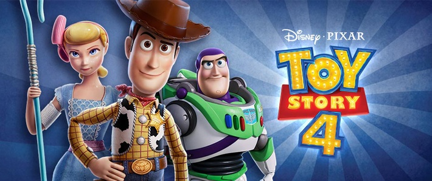

Woody siempre ha tenido claro cuál es su labor en el mundo y cuál es su prioridad: cuidar a su dueño, ya sea Andy o Bonnie. Sin embargo, Woody descubrirá lo grande que puede ser el mundo para un juguete cuando Forky se convierta en su nuevo compañero de habitación.
